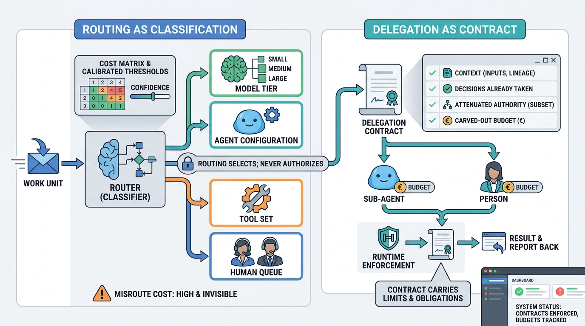

Part III — ORCHESTRATION: Planning, Delegation and Coordination
Routing and Delegation
AI-assisted: written with Claude Code, images generated with the Gemini API. How this works

Image generated by Google Gemini (gemini-3-pro-image-preview)